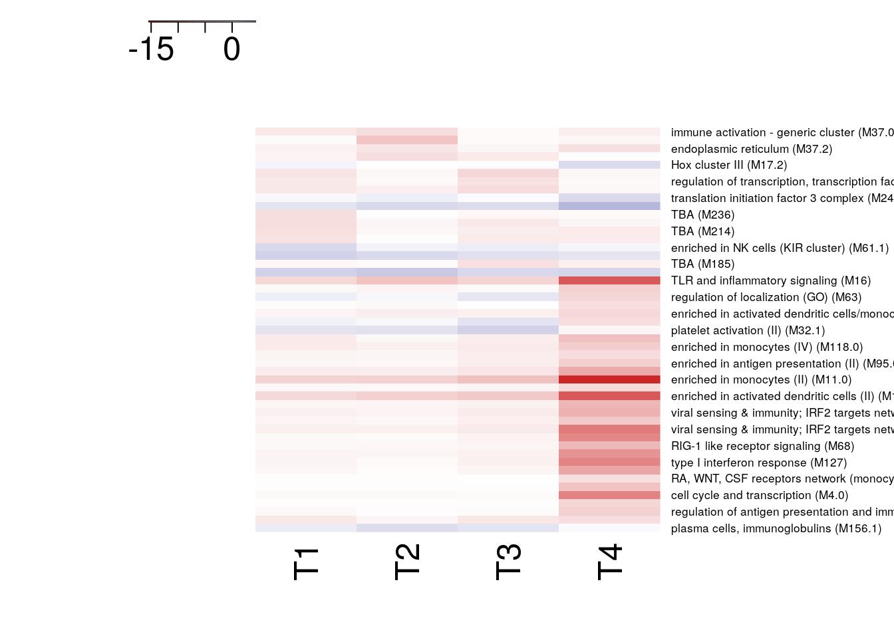

Last updated: 2020-04-01
Checks: 6 1
Knit directory: Vahey/
This reproducible R Markdown analysis was created with workflowr (version 1.6.1). The Checks tab describes the reproducibility checks that were applied when the results were created. The Past versions tab lists the development history.
The R Markdown file has unstaged changes. To know which version of the R Markdown file created these results, you’ll want to first commit it to the Git repo. If you’re still working on the analysis, you can ignore this warning. When you’re finished, you can run wflow_publish to commit the R Markdown file and build the HTML.
Great job! The global environment was empty. Objects defined in the global environment can affect the analysis in your R Markdown file in unknown ways. For reproduciblity it’s best to always run the code in an empty environment.
The command set.seed(20181008) was run prior to running the code in the R Markdown file. Setting a seed ensures that any results that rely on randomness, e.g. subsampling or permutations, are reproducible.
Great job! Recording the operating system, R version, and package versions is critical for reproducibility.
Nice! There were no cached chunks for this analysis, so you can be confident that you successfully produced the results during this run.
Great job! Using relative paths to the files within your workflowr project makes it easier to run your code on other machines.
Great! You are using Git for version control. Tracking code development and connecting the code version to the results is critical for reproducibility.
The results in this page were generated with repository version ad83993. See the Past versions tab to see a history of the changes made to the R Markdown and HTML files.
Note that you need to be careful to ensure that all relevant files for the analysis have been committed to Git prior to generating the results (you can use wflow_publish or wflow_git_commit). workflowr only checks the R Markdown file, but you know if there are other scripts or data files that it depends on. Below is the status of the Git repository when the results were generated:
Ignored files:
Ignored: .Rhistory
Untracked files:
Untracked: data/BTM_for_GSEA_20131008.gmt
Untracked: data/GPL570.soft
Untracked: data/GPL571.soft
Untracked: data/GSE18323-GPL570_series_matrix.txt.gz
Untracked: data/GSE18323-GPL571_series_matrix.txt.gz
Untracked: data/gpl_eset.Rds
Untracked: output/Vahey_GSEA_disease.csv
Unstaged changes:
Modified: analysis/GSEA_Disease.Rmd
Modified: analysis/GSEA_T0.Rmd
Modified: analysis/GSEA_T0_Interaction.Rmd
Modified: analysis/GSEA_T1_Interaction.Rmd
Note that any generated files, e.g. HTML, png, CSS, etc., are not included in this status report because it is ok for generated content to have uncommitted changes.
These are the previous versions of the repository in which changes were made to the R Markdown (analysis/GSEA_T0_Interaction.Rmd) and HTML (docs/GSEA_T0_Interaction.html) files. If you’ve configured a remote Git repository (see ?wflow_git_remote), click on the hyperlinks in the table below to view the files as they were in that past version.
| File | Version | Author | Date | Message |
|---|---|---|---|---|
| Rmd | ad83993 | carlmurie | 2019-10-21 | update files |
| html | ad83993 | carlmurie | 2019-10-21 | update files |
The Blood Transcript Modules (BTM) from Shuzhao et al. Molecular signatures of antibody responses derived from a systems biological study of 5 human vaccines, 2014 were used for the GSEA analysis.
A FDR cutoff of <= 0.2 was used.
The formula used in the camera function is: ~visit*disease
| total | Protected | NonProtected | |
|---|---|---|---|
| T0 | 36 | 11 | 25 |
| T1 | 37 | 12 | 25 |
| T2 | 36 | 12 | 24 |
| T3 | 36 | 12 | 24 |
| T4 | 37 | 11 | 26 |
| T5 | 39 | 13 | 26 |
| geneset | NGenes | Direction | PValue | FDR |
|---|---|---|---|---|
| enriched in monocytes (II) (M11.0) | 173 | Down | 0.000 | 0.001 |
| enriched in activated dendritic cells (II) (M165) | 32 | Down | 0.000 | 0.002 |
| enriched in NK cells (I) (M7.2) | 39 | Up | 0.000 | 0.002 |
| enriched in NK cells (II) (M61.0) | 23 | Up | 0.000 | 0.002 |
| TLR and inflammatory signaling (M16) | 43 | Down | 0.000 | 0.002 |
| phosphatidylinositol signaling system (M101) | 13 | Down | 0.000 | 0.005 |
| TBA (M236) | 10 | Down | 0.000 | 0.005 |
| enriched in NK cells (KIR cluster) (M61.1) | 13 | Up | 0.000 | 0.005 |
| TBA (M214) | 12 | Down | 0.000 | 0.006 |
| TBA (M205) | 11 | Down | 0.000 | 0.008 |
| TBA (M72.0) | 21 | Down | 0.000 | 0.013 |
| TBA (M72.2) | 12 | Down | 0.000 | 0.013 |
| cytoskeletal remodeling (M32.8) | 10 | Up | 0.001 | 0.013 |
| inositol phosphate metabolism (M129) | 12 | Down | 0.001 | 0.014 |
| TBA (M174) | 21 | Down | 0.001 | 0.024 |
| cell cycle, ATP binding (M144) | 15 | Down | 0.001 | 0.024 |
| platelet activation (II) (M32.1) | 21 | Up | 0.001 | 0.024 |
| TBA (M72.1) | 16 | Down | 0.001 | 0.024 |
| enriched in NK cells (receptor activation) (M61.2) | 14 | Up | 0.001 | 0.024 |
| enriched in T cells (I) (M7.0) | 51 | Up | 0.001 | 0.024 |
| regulation of transcription, transcription factors (M213) | 14 | Down | 0.001 | 0.024 |
| golgi membrane (II) (M237) | 13 | Down | 0.002 | 0.025 |
| TBA (M148) | 11 | Down | 0.002 | 0.026 |
| immune activation - generic cluster (M37.0) | 266 | Down | 0.002 | 0.026 |
| TBA (M177.1) | 8 | Down | 0.002 | 0.027 |
| NK cell surface signature (S1) | 41 | Up | 0.003 | 0.037 |
| enriched in monocytes (IV) (M118.0) | 44 | Down | 0.003 | 0.037 |
| TBA (M194) | 13 | Down | 0.003 | 0.038 |
| myeloid cell enriched receptors and transporters (M4.3) | 23 | Down | 0.003 | 0.039 |
| TBA (M180) | 11 | Down | 0.003 | 0.039 |
| intracellular transport (M147) | 16 | Down | 0.004 | 0.043 |
| nuclear pore complex (mitosis) (M106.1) | 11 | Down | 0.004 | 0.043 |
| TBA (M137) | 15 | Down | 0.005 | 0.046 |
| TBA (M161) | 14 | Down | 0.005 | 0.046 |
| Monocyte surface signature (S4) | 65 | Down | 0.005 | 0.051 |
| TBA (M32.5) | 14 | Up | 0.008 | 0.074 |
| viral sensing & immunity; IRF2 targets network (II) (M111.1) | 10 | Down | 0.008 | 0.074 |
| TBA (M153) | 12 | Down | 0.008 | 0.074 |
| plasma cells, immunoglobulins (M156.1) | 11 | Up | 0.009 | 0.077 |
| MAPK, RAS signaling (M100) | 9 | Up | 0.011 | 0.091 |
| TBA (M26.0) | 26 | Up | 0.011 | 0.093 |
| viral sensing & immunity; IRF2 targets network (I) (M111.0) | 15 | Down | 0.011 | 0.093 |
| TBA (M128) | 11 | Down | 0.012 | 0.097 |
| regulation of localization (GO) (M63) | 12 | Up | 0.013 | 0.098 |
| endoplasmic reticulum (M37.2) | 15 | Down | 0.014 | 0.108 |
| proinflammatory cytokines and chemokines (M29) | 9 | Down | 0.016 | 0.118 |
| enriched in activated dendritic cells (I) (M119) | 10 | Down | 0.020 | 0.146 |
| TBA (M243) | 9 | Up | 0.021 | 0.146 |
| enriched in monocytes (I) (M4.15) | 10 | Down | 0.021 | 0.146 |
| enriched in monocytes (III) (M73) | 11 | Down | 0.024 | 0.162 |
| TBA (M192) | 12 | Up | 0.025 | 0.164 |
| TBA (M136) | 16 | Up | 0.025 | 0.164 |
| mitotic cell cycle - DNA replication (M4.4) | 26 | Up | 0.026 | 0.164 |
| proteasome (M226) | 10 | Down | 0.027 | 0.171 |
| TBA (M80) | 16 | Down | 0.028 | 0.173 |
| interferon alpha response (II) (M158.1) | 12 | Up | 0.030 | 0.179 |
| mitosis (TF motif CCAATNNSNNNGCG) (M169) | 14 | Down | 0.031 | 0.179 |
| TBA (M32.6) | 13 | Up | 0.031 | 0.179 |
| TBA (M66) | 16 | Down | 0.031 | 0.179 |
| type I interferon response (M127) | 11 | Down | 0.032 | 0.179 |
| TBA (M125) | 10 | Down | 0.034 | 0.186 |
| antiviral IFN signature (M75) | 20 | Down | 0.034 | 0.186 |
| enriched in activated dendritic cells/monocytes (M64) | 15 | Down | 0.035 | 0.186 |
| TBA (source: B cells) (M217) | 9 | Up | 0.035 | 0.186 |
| antigen processing and presentation (M200) | 6 | Down | 0.037 | 0.191 |
| CCR1, 7 and cell signaling (M59) | 10 | Down | 0.038 | 0.194 |
| Hox cluster III (M17.2) | 10 | Up | 0.039 | 0.199 |
| geneset | NGenes | Direction | PValue | FDR |
|---|---|---|---|---|
| TLR and inflammatory signaling (M16) | 43 | Down | 0.000 | 0.000 |
| enriched in neutrophils (I) (M37.1) | 39 | Down | 0.000 | 0.000 |
| enriched in activated dendritic cells (II) (M165) | 32 | Down | 0.000 | 0.000 |
| enriched in monocytes (II) (M11.0) | 173 | Down | 0.000 | 0.001 |
| enriched in NK cells (I) (M7.2) | 39 | Up | 0.000 | 0.001 |
| enriched in T cells (I) (M7.0) | 51 | Up | 0.000 | 0.005 |
| TBA (M125) | 10 | Down | 0.000 | 0.005 |
| immune activation - generic cluster (M37.0) | 266 | Down | 0.000 | 0.005 |
| enriched in NK cells (II) (M61.0) | 23 | Up | 0.000 | 0.006 |
| plasma cells, immunoglobulins (M156.1) | 11 | Up | 0.000 | 0.010 |
| endoplasmic reticulum (M37.2) | 15 | Down | 0.000 | 0.015 |
| platelet activation (II) (M32.1) | 21 | Up | 0.001 | 0.016 |
| interferon alpha response (I) (M158.0) | 16 | Down | 0.001 | 0.020 |
| TBA (source: B cells) (M152.0) | 16 | Down | 0.001 | 0.023 |
| recruitment of neutrophils (M132) | 9 | Down | 0.002 | 0.044 |
| proinflammatory cytokines and chemokines (M29) | 9 | Down | 0.003 | 0.054 |
| Monocyte surface signature (S4) | 65 | Down | 0.003 | 0.055 |
| enriched in activated dendritic cells/monocytes (M64) | 15 | Down | 0.003 | 0.056 |
| TBA (M70.0) | 17 | Down | 0.003 | 0.056 |
| plasma cells & B cells, immunoglobulins (M156.0) | 24 | Up | 0.003 | 0.056 |
| proteasome (M226) | 10 | Down | 0.004 | 0.057 |
| enriched in myeloid cells and monocytes (M81) | 34 | Down | 0.004 | 0.060 |
| TBA (source: naive B cells) (M152.1) | 8 | Down | 0.004 | 0.066 |
| TBA (M174) | 21 | Down | 0.006 | 0.083 |
| chemokines and inflammatory molecules in myeloid cells (M86.0) | 18 | Down | 0.007 | 0.092 |
| enriched in monocytes (IV) (M118.0) | 44 | Down | 0.007 | 0.097 |
| TLR8-BAFF network (M25) | 8 | Down | 0.008 | 0.098 |
| viral sensing & immunity; IRF2 targets network (II) (M111.1) | 10 | Down | 0.008 | 0.099 |
| transmembrane transport (I) (M87) | 24 | Down | 0.010 | 0.115 |
| translation initiation factor 3 complex (M245) | 9 | Up | 0.011 | 0.124 |
| T cell activation (I) (M7.1) | 43 | Up | 0.012 | 0.124 |
| cytoskeletal remodeling (M32.8) | 10 | Up | 0.012 | 0.124 |
| TBA (M161) | 14 | Down | 0.013 | 0.130 |
| CORO1A-DEF6 network (I) (M32.2) | 19 | Up | 0.015 | 0.151 |
| enriched in neutrophils (II) (M163) | 12 | Down | 0.016 | 0.156 |
| proinflammatory dendritic cell, myeloid cell response (M86.1) | 12 | Down | 0.017 | 0.157 |
| cell junction (GO) (M4.13) | 10 | Down | 0.019 | 0.169 |
| viral sensing & immunity; IRF2 targets network (I) (M111.0) | 15 | Down | 0.019 | 0.169 |
| formyl peptide receptor mediated neutrophil response (M11.2) | 9 | Down | 0.020 | 0.169 |
| enriched in NK cells (KIR cluster) (M61.1) | 13 | Up | 0.020 | 0.169 |
| cell junction (M162.1) | 11 | Down | 0.021 | 0.169 |
| TBA (source: memory B cells) (M152.2) | 10 | Down | 0.021 | 0.169 |
| inflammasome receptors and signaling (M53) | 10 | Down | 0.021 | 0.169 |
| TBA (M70.1) | 9 | Down | 0.025 | 0.192 |
| T cell surface signature (S0) | 22 | Up | 0.026 | 0.197 |
| antiviral IFN signature (M75) | 20 | Down | 0.027 | 0.197 |
| platelet activation (I) (M32.0) | 22 | Up | 0.028 | 0.197 |
| TBA (M148) | 11 | Down | 0.028 | 0.197 |
| enriched in monocytes (I) (M4.15) | 10 | Down | 0.028 | 0.197 |
| enriched in NK cells (receptor activation) (M61.2) | 14 | Up | 0.029 | 0.198 |
| geneset | NGenes | Direction | PValue | FDR |
|---|---|---|---|---|
| enriched in monocytes (II) (M11.0) | 173 | Down | 0.000 | 0.000 |
| enriched in activated dendritic cells (II) (M165) | 32 | Down | 0.000 | 0.000 |
| TLR and inflammatory signaling (M16) | 43 | Down | 0.000 | 0.001 |
| TBA (M72.0) | 21 | Down | 0.000 | 0.002 |
| platelet activation (II) (M32.1) | 21 | Up | 0.000 | 0.002 |
| TBA (M174) | 21 | Down | 0.000 | 0.003 |
| enriched in NK cells (I) (M7.2) | 39 | Up | 0.000 | 0.005 |
| TBA (M185) | 14 | Down | 0.000 | 0.007 |
| regulation of transcription, transcription factors (M213) | 14 | Down | 0.000 | 0.008 |
| enriched in T cells (I) (M7.0) | 51 | Up | 0.000 | 0.008 |
| cell cycle, ATP binding (M144) | 15 | Down | 0.000 | 0.014 |
| enriched in NK cells (II) (M61.0) | 23 | Up | 0.001 | 0.015 |
| Monocyte surface signature (S4) | 65 | Down | 0.001 | 0.015 |
| platelet activation (I) (M32.0) | 22 | Up | 0.001 | 0.015 |
| TBA (M72.2) | 12 | Down | 0.001 | 0.015 |
| TBA (M72.1) | 16 | Down | 0.001 | 0.015 |
| cytoskeletal remodeling (M32.8) | 10 | Up | 0.001 | 0.015 |
| TBA (M148) | 11 | Down | 0.001 | 0.020 |
| TBA (M32.5) | 14 | Up | 0.001 | 0.020 |
| intracellular transport (M147) | 16 | Down | 0.001 | 0.020 |
| plasma cells, immunoglobulins (M156.1) | 11 | Up | 0.002 | 0.024 |
| TBA (M136) | 16 | Up | 0.002 | 0.024 |
| inositol phosphate metabolism (M129) | 12 | Down | 0.002 | 0.026 |
| phosphatidylinositol signaling system (M101) | 13 | Down | 0.002 | 0.027 |
| TBA (M192) | 12 | Up | 0.002 | 0.032 |
| TBA (M205) | 11 | Down | 0.002 | 0.032 |
| interferon alpha response (II) (M158.1) | 12 | Up | 0.003 | 0.036 |
| viral sensing & immunity; IRF2 targets network (II) (M111.1) | 10 | Down | 0.003 | 0.036 |
| TBA (M161) | 14 | Down | 0.003 | 0.036 |
| enriched in monocytes (IV) (M118.0) | 44 | Down | 0.003 | 0.036 |
| TBA (M125) | 10 | Down | 0.003 | 0.036 |
| CORO1A-DEF6 network (I) (M32.2) | 19 | Up | 0.004 | 0.036 |
| TBA (M153) | 12 | Down | 0.004 | 0.036 |
| regulation of localization (GO) (M63) | 12 | Up | 0.004 | 0.036 |
| viral sensing & immunity; IRF2 targets network (I) (M111.0) | 15 | Down | 0.004 | 0.037 |
| TBA (M32.6) | 13 | Up | 0.005 | 0.043 |
| MAPK, RAS signaling (M100) | 9 | Up | 0.005 | 0.043 |
| TBA (M214) | 12 | Down | 0.006 | 0.055 |
| plasma cells & B cells, immunoglobulins (M156.0) | 24 | Up | 0.007 | 0.056 |
| enriched in antigen presentation (II) (M95.0) | 20 | Down | 0.007 | 0.056 |
| C-MYC transcriptional network (M4.12) | 11 | Up | 0.007 | 0.056 |
| TBA (M183) | 9 | Up | 0.007 | 0.056 |
| TBA (M180) | 11 | Down | 0.007 | 0.058 |
| TBA (M32.7) | 11 | Up | 0.008 | 0.058 |
| TBA (M197) | 11 | Up | 0.008 | 0.058 |
| TBA (M137) | 15 | Down | 0.008 | 0.058 |
| enriched in B cells (I) (M47.0) | 37 | Up | 0.009 | 0.062 |
| enriched in monocytes (III) (M73) | 11 | Down | 0.009 | 0.062 |
| enriched for TF motif PAX3 (M179) | 9 | Down | 0.009 | 0.062 |
| enriched in monocytes (I) (M4.15) | 10 | Down | 0.009 | 0.062 |
| myeloid cell enriched receptors and transporters (M4.3) | 23 | Down | 0.009 | 0.062 |
| TBA (M66) | 16 | Down | 0.010 | 0.064 |
| TBA (M79) | 8 | Down | 0.010 | 0.066 |
| translation initiation (M227) | 10 | Down | 0.011 | 0.072 |
| KLF12 targets network (M32.3) | 16 | Up | 0.012 | 0.073 |
| golgi membrane (II) (M237) | 13 | Down | 0.012 | 0.074 |
| T cell surface signature (S0) | 22 | Up | 0.013 | 0.078 |
| proinflammatory cytokines and chemokines (M29) | 9 | Down | 0.015 | 0.087 |
| enriched in activated dendritic cells/monocytes (M64) | 15 | Down | 0.016 | 0.090 |
| enriched in cell cycle (M167) | 13 | Up | 0.016 | 0.090 |
| type I interferon response (M127) | 11 | Down | 0.017 | 0.093 |
| TBA (M26.0) | 26 | Up | 0.018 | 0.095 |
| enriched in NK cells (KIR cluster) (M61.1) | 13 | Up | 0.018 | 0.095 |
| CORO1A-DEF6 network (II) (M32.4) | 14 | Up | 0.020 | 0.106 |
| TBA (M194) | 13 | Down | 0.021 | 0.106 |
| TBA (M128) | 11 | Down | 0.021 | 0.106 |
| TBA (M243) | 9 | Up | 0.021 | 0.106 |
| antiviral IFN signature (M75) | 20 | Down | 0.021 | 0.106 |
| cell junction (GO) (M4.13) | 10 | Down | 0.022 | 0.106 |
| TBA (M70.0) | 17 | Down | 0.024 | 0.118 |
| mitotic cell cycle - DNA replication (M4.4) | 26 | Up | 0.025 | 0.118 |
| innate antiviral response (M150) | 11 | Down | 0.027 | 0.129 |
| T cell activation (I) (M7.1) | 43 | Up | 0.029 | 0.132 |
| TBA (M105) | 12 | Down | 0.029 | 0.132 |
| TBA (M218) | 11 | Down | 0.029 | 0.132 |
| enriched in B cells (II) (M47.1) | 28 | Up | 0.030 | 0.135 |
| TLR8-BAFF network (M25) | 8 | Down | 0.037 | 0.161 |
| nuclear pore complex (mitosis) (M106.1) | 11 | Down | 0.038 | 0.168 |
| enriched in dendritic cells (M168) | 13 | Down | 0.039 | 0.168 |
| enriched in antigen presentation (III) (M95.1) | 12 | Down | 0.040 | 0.170 |
| proteasome (M226) | 10 | Down | 0.040 | 0.170 |
| chemokines and inflammatory molecules in myeloid cells (M86.0) | 18 | Down | 0.043 | 0.178 |
| TBA (M184.0) | 14 | Down | 0.043 | 0.178 |
| T cell activation (II) (M7.3) | 26 | Up | 0.045 | 0.182 |
| TBA (M41.0) | 15 | Up | 0.047 | 0.186 |
| proinflammatory dendritic cell, myeloid cell response (M86.1) | 12 | Down | 0.047 | 0.186 |
| geneset | NGenes | Direction | PValue | FDR |
|---|---|---|---|---|
| enriched in monocytes (II) (M11.0) | 173 | Down | 0.000 | 0.000 |
| enriched in activated dendritic cells (II) (M165) | 32 | Down | 0.000 | 0.000 |
| TLR and inflammatory signaling (M16) | 43 | Down | 0.000 | 0.000 |
| viral sensing & immunity; IRF2 targets network (II) (M111.1) | 10 | Down | 0.000 | 0.000 |
| cell cycle and transcription (M4.0) | 286 | Down | 0.000 | 0.000 |
| type I interferon response (M127) | 11 | Down | 0.000 | 0.000 |
| innate antiviral response (M150) | 11 | Down | 0.000 | 0.000 |
| antiviral IFN signature (M75) | 20 | Down | 0.000 | 0.000 |
| activated dendritic cells (M67) | 11 | Down | 0.000 | 0.000 |
| Monocyte surface signature (S4) | 65 | Down | 0.000 | 0.000 |
| viral sensing & immunity; IRF2 targets network (I) (M111.0) | 15 | Down | 0.000 | 0.000 |
| cell junction (GO) (M4.13) | 10 | Down | 0.000 | 0.000 |
| RIG-1 like receptor signaling (M68) | 9 | Down | 0.000 | 0.000 |
| myeloid cell enriched receptors and transporters (M4.3) | 23 | Down | 0.000 | 0.000 |
| enriched in T cells (I) (M7.0) | 51 | Up | 0.000 | 0.000 |
| MHC-TLR7-TLR8 cluster (M146) | 16 | Down | 0.000 | 0.000 |
| TBA (M66) | 16 | Down | 0.000 | 0.000 |
| enriched in monocytes (IV) (M118.0) | 44 | Down | 0.000 | 0.000 |
| enriched in antigen presentation (II) (M95.0) | 20 | Down | 0.000 | 0.000 |
| regulation of antigen presentation and immune response (M5.0) | 73 | Down | 0.000 | 0.001 |
| formyl peptide receptor mediated neutrophil response (M11.2) | 9 | Down | 0.000 | 0.001 |
| regulation of localization (GO) (M63) | 12 | Down | 0.000 | 0.001 |
| TBA (M48) | 12 | Down | 0.000 | 0.001 |
| enriched in activated dendritic cells/monocytes (M64) | 15 | Down | 0.000 | 0.002 |
| enriched in antigen presentation (III) (M95.1) | 12 | Down | 0.000 | 0.003 |
| enriched in monocytes (I) (M4.15) | 10 | Down | 0.000 | 0.003 |
| enriched in NK cells (I) (M7.2) | 39 | Up | 0.000 | 0.003 |
| TBA (M148) | 11 | Down | 0.000 | 0.004 |
| TBA (M136) | 16 | Down | 0.000 | 0.004 |
| translation initiation factor 3 complex (M245) | 9 | Up | 0.001 | 0.006 |
| BCR signaling (M54) | 12 | Down | 0.001 | 0.006 |
| RA, WNT, CSF receptors network (monocyte) (M23) | 11 | Down | 0.001 | 0.006 |
| endoplasmic reticulum (M37.2) | 15 | Down | 0.001 | 0.007 |
| Hox cluster III (M17.2) | 10 | Up | 0.001 | 0.007 |
| enriched in activated dendritic cells (I) (M119) | 10 | Down | 0.001 | 0.014 |
| innate activation by cytosolic DNA sensing (M13) | 11 | Down | 0.002 | 0.014 |
| enriched in monocytes (III) (M73) | 11 | Down | 0.002 | 0.014 |
| lysosomal/endosomal proteins (M139) | 10 | Down | 0.002 | 0.014 |
| lysosome (M209) | 7 | Down | 0.002 | 0.014 |
| proteasome (M226) | 10 | Down | 0.002 | 0.015 |
| cell division in stimulated CD4 T cells (M4.6) | 13 | Down | 0.002 | 0.017 |
| T cell differentiation (Th2) (M19) | 16 | Up | 0.003 | 0.020 |
| blood coagulation (M11.1) | 19 | Down | 0.003 | 0.026 |
| cell cycle (I) (M4.1) | 127 | Down | 0.003 | 0.027 |
| platelet activation (I) (M32.0) | 22 | Down | 0.004 | 0.027 |
| enriched in NK cells (II) (M61.0) | 23 | Up | 0.004 | 0.027 |
| inflammasome receptors and signaling (M53) | 10 | Down | 0.004 | 0.028 |
| complement and other receptors in DCs (M40) | 12 | Down | 0.004 | 0.028 |
| G protein coupled receptors cluster (M155) | 9 | Down | 0.004 | 0.028 |
| regulation of signal transduction (M3) | 40 | Down | 0.004 | 0.028 |
| recruitment of neutrophils (M132) | 9 | Down | 0.004 | 0.028 |
| TBA (M26.0) | 26 | Up | 0.005 | 0.032 |
| Wnt signaling pathway (M206) | 14 | Up | 0.005 | 0.032 |
| TBA (M26.2) | 10 | Up | 0.005 | 0.032 |
| TBA (M26.1) | 18 | Up | 0.005 | 0.032 |
| TBA (M192) | 12 | Down | 0.005 | 0.032 |
| T cell differentiation via ITK and PKC (M18) | 11 | Up | 0.006 | 0.033 |
| TBA (M214) | 12 | Down | 0.006 | 0.033 |
| T cell activation (I) (M7.1) | 43 | Up | 0.006 | 0.035 |
| antigen processing and presentation (M200) | 6 | Down | 0.007 | 0.039 |
| complement activation (I) (M112.0) | 16 | Down | 0.008 | 0.046 |
| TBA (M205) | 11 | Down | 0.009 | 0.047 |
| T cell surface signature (S0) | 22 | Up | 0.009 | 0.051 |
| T cell activation (III) (M7.4) | 13 | Up | 0.010 | 0.053 |
| T cell differentiation (M14) | 11 | Up | 0.010 | 0.053 |
| IL2, IL7, TCR network (M65) | 11 | Up | 0.011 | 0.054 |
| enriched in neutrophils (II) (M163) | 12 | Down | 0.011 | 0.056 |
| TBA (M180) | 11 | Down | 0.012 | 0.059 |
| enriched in myeloid cells and monocytes (M81) | 34 | Down | 0.013 | 0.062 |
| immune activation - generic cluster (M37.0) | 266 | Down | 0.014 | 0.068 |
| Hox cluster II (M17.1) | 11 | Up | 0.015 | 0.071 |
| KLF12 targets network (M32.3) | 16 | Down | 0.015 | 0.071 |
| enriched in NK cells (receptor activation) (M61.2) | 14 | Up | 0.015 | 0.071 |
| CCR1, 7 and cell signaling (M59) | 10 | Down | 0.016 | 0.072 |
| TBA (M198) | 10 | Down | 0.016 | 0.073 |
| Hox cluster IV (M17.3) | 8 | Up | 0.016 | 0.073 |
| suppression of MAPK signaling (M56) | 11 | Down | 0.016 | 0.073 |
| TBA (M161) | 14 | Down | 0.017 | 0.075 |
| TBA (M55) | 11 | Down | 0.018 | 0.079 |
| platelet activation (III) (M42) | 10 | Down | 0.019 | 0.079 |
| B cell surface signature (S2) | 137 | Up | 0.019 | 0.081 |
| enriched in antigen presentation (I) (M71) | 16 | Down | 0.020 | 0.081 |
| TBA (M185) | 14 | Down | 0.021 | 0.086 |
| TBA (M153) | 12 | Down | 0.024 | 0.099 |
| inositol phosphate metabolism (M129) | 12 | Down | 0.028 | 0.112 |
| xenobiotic metabolism (M164) | 8 | Up | 0.030 | 0.116 |
| B cell development/activation (M58) | 11 | Down | 0.030 | 0.116 |
| TBA (M41.2) | 12 | Up | 0.031 | 0.118 |
| enriched in extracellular matrix & associated proteins (M202) | 11 | Up | 0.032 | 0.124 |
| transcription regulation in cell development (M49) | 45 | Down | 0.036 | 0.135 |
| T cell activation (II) (M7.3) | 26 | Up | 0.036 | 0.135 |
| TBA (M177.1) | 8 | Down | 0.038 | 0.140 |
| TLR8-BAFF network (M25) | 8 | Down | 0.038 | 0.140 |
| TBA (M41.0) | 15 | Up | 0.040 | 0.143 |
| inflammatory response (M33) | 9 | Down | 0.040 | 0.144 |
| cell activation (IL15, IL23, TNF) (M24) | 14 | Down | 0.042 | 0.148 |
| chemokines and inflammatory molecules in myeloid cells (M86.0) | 18 | Down | 0.042 | 0.149 |
| TBA (M233) | 12 | Up | 0.044 | 0.151 |
| TBA (M121) | 11 | Down | 0.045 | 0.154 |
| CORO1A-DEF6 network (II) (M32.4) | 14 | Down | 0.045 | 0.154 |
| transmembrane transport (I) (M87) | 24 | Down | 0.047 | 0.158 |
| E2F transcription factor network (M8) | 12 | Down | 0.049 | 0.164 |
| transmembrane and ion transporters (II) (M224) | 11 | Up | 0.052 | 0.171 |
| intracellular transport (M147) | 16 | Down | 0.057 | 0.185 |
| proinflammatory dendritic cell, myeloid cell response (M86.1) | 12 | Down | 0.061 | 0.197 |
| TBA (M149) | 7 | Up | 0.062 | 0.199 |
There is a confound between visits T5 and the other visit times. The T5 visit used the HGU133A 2.0 chip while the other visits used the HGU133 Plus 2.0 chip. Boxplots of normalized scores and MDS plots show a clear separation between the samples for the two chips (see Quality Control section).
| geneset | NGenes | Direction | PValue | FDR |
|---|---|---|---|---|
| cell cycle (I) (M4.1) | 127 | Down | 0.000 | 0.000 |
| cell cycle and transcription (M4.0) | 286 | Down | 0.000 | 0.000 |
| enriched in T cells (I) (M7.0) | 51 | Up | 0.000 | 0.000 |
| TLR and inflammatory signaling (M16) | 43 | Down | 0.000 | 0.000 |
| enriched in NK cells (I) (M7.2) | 39 | Up | 0.000 | 0.000 |
| mitotic cell division (M6) | 25 | Down | 0.000 | 0.001 |
| enriched in monocytes (II) (M11.0) | 173 | Down | 0.000 | 0.001 |
| enriched in activated dendritic cells (II) (M165) | 32 | Down | 0.000 | 0.001 |
| cell division (stimulated CD4+ T cells) (M46) | 24 | Down | 0.000 | 0.001 |
| cell cycle (II) (M4.10) | 14 | Down | 0.000 | 0.003 |
| enriched in NK cells (II) (M61.0) | 23 | Up | 0.000 | 0.004 |
| T cell activation (I) (M7.1) | 43 | Up | 0.000 | 0.005 |
| E2F transcription factor network (M8) | 12 | Down | 0.000 | 0.005 |
| cell division in stimulated CD4 T cells (M4.6) | 13 | Down | 0.000 | 0.007 |
| Ran mediated mitosis (M15) | 13 | Down | 0.000 | 0.008 |
| PLK1 signaling events (M4.2) | 31 | Down | 0.001 | 0.012 |
| cytoskeletal remodeling (M32.8) | 10 | Up | 0.001 | 0.020 |
| endoplasmic reticulum (M37.2) | 15 | Down | 0.001 | 0.022 |
| transcription regulation in cell development (M49) | 45 | Down | 0.001 | 0.023 |
| heme biosynthesis (I) (M171) | 10 | Down | 0.001 | 0.025 |
| enriched in NK cells (receptor activation) (M61.2) | 14 | Up | 0.002 | 0.028 |
| T cell differentiation (Th2) (M19) | 16 | Up | 0.003 | 0.049 |
| platelet activation (II) (M32.1) | 21 | Up | 0.003 | 0.049 |
| T cell activation and signaling (M5.1) | 21 | Up | 0.004 | 0.053 |
| cell cycle (III) (M103) | 51 | Down | 0.004 | 0.057 |
| C-MYC transcriptional network (M4.12) | 11 | Down | 0.004 | 0.058 |
| viral sensing & immunity; IRF2 targets network (II) (M111.1) | 10 | Down | 0.005 | 0.059 |
| Monocyte surface signature (S4) | 65 | Down | 0.006 | 0.068 |
| T cell differentiation via ITK and PKC (M18) | 11 | Up | 0.006 | 0.068 |
| transmembrane transport (I) (M87) | 24 | Down | 0.006 | 0.068 |
| IL2, IL7, TCR network (M65) | 11 | Up | 0.007 | 0.071 |
| mitotic cell cycle in stimulated CD4 T cells (M4.5) | 23 | Down | 0.007 | 0.071 |
| T cell activation (III) (M7.4) | 13 | Up | 0.007 | 0.074 |
| mitotic cell cycle in stimulated CD4 T cells (M4.9) | 13 | Down | 0.008 | 0.077 |
| putative targets of PAX3 (M89.0) | 15 | Up | 0.009 | 0.091 |
| TBA (M184.0) | 14 | Down | 0.010 | 0.091 |
| translation initiation factor 3 complex (M245) | 9 | Up | 0.010 | 0.091 |
| activated dendritic cells (M67) | 11 | Down | 0.011 | 0.091 |
| T cell surface signature (S0) | 22 | Up | 0.011 | 0.091 |
| leukocyte activation and migration (M45) | 11 | Up | 0.011 | 0.091 |
| antiviral IFN signature (M75) | 20 | Down | 0.011 | 0.091 |
| TBA (M233) | 12 | Down | 0.012 | 0.091 |
| T cell activation (II) (M7.3) | 26 | Up | 0.012 | 0.091 |
| enriched in NK cells (KIR cluster) (M61.1) | 13 | Up | 0.012 | 0.091 |
| interferon alpha response (I) (M158.0) | 16 | Down | 0.012 | 0.091 |
| DNA repair (M76) | 21 | Down | 0.013 | 0.091 |
| mitotic cell cycle - DNA replication (M4.4) | 26 | Down | 0.013 | 0.091 |
| extracellular matrix (II) (M2.1) | 44 | Down | 0.013 | 0.091 |
| T cell differentiation (M14) | 11 | Up | 0.013 | 0.091 |
| immune activation - generic cluster (M37.0) | 266 | Down | 0.013 | 0.091 |
| enriched in neutrophils (I) (M37.1) | 39 | Down | 0.014 | 0.095 |
| type I interferon response (M127) | 11 | Down | 0.015 | 0.098 |
| TBA (M26.1) | 18 | Down | 0.017 | 0.109 |
| leukocyte differentiation (M160) | 15 | Up | 0.018 | 0.109 |
| cell cell adhesion (M133.1) | 10 | Down | 0.018 | 0.109 |
| TBA (M211) | 10 | Up | 0.018 | 0.109 |
| TBA (M120) | 10 | Up | 0.021 | 0.125 |
| small GTPase mediated signal transduction (M215) | 11 | Up | 0.022 | 0.126 |
| mitotic cell cycle (M4.7) | 20 | Down | 0.023 | 0.131 |
| ATF targets network (M41.4) | 9 | Down | 0.024 | 0.135 |
| viral sensing & immunity; IRF2 targets network (I) (M111.0) | 15 | Down | 0.024 | 0.135 |
| TBA (M70.0) | 17 | Down | 0.026 | 0.140 |
| MAPK, RAS signaling (M100) | 9 | Up | 0.027 | 0.143 |
| myeloid cell enriched receptors and transporters (M4.3) | 23 | Down | 0.028 | 0.147 |
| recruitment of neutrophils (M132) | 9 | Down | 0.028 | 0.148 |
| proinflammatory dendritic cell, myeloid cell response (M86.1) | 12 | Down | 0.031 | 0.158 |
| NK cell surface signature (S1) | 41 | Up | 0.031 | 0.158 |
| signal transduction, plasma membrane (M82) | 12 | Down | 0.032 | 0.159 |
| proinflammatory cytokines and chemokines (M29) | 9 | Down | 0.035 | 0.170 |
| innate antiviral response (M150) | 11 | Down | 0.035 | 0.171 |
| putative targets of PAX3 (M89.1) | 10 | Up | 0.036 | 0.171 |
| TBA (source: naive B cells) (M152.1) | 8 | Up | 0.039 | 0.180 |
| Plasma cell surface signature (S3) | 16 | Down | 0.039 | 0.180 |
| growth factor induced, enriched in nuclear receptor subfamily 4 (M94) | 12 | Up | 0.039 | 0.180 |
| TBA (M141) | 23 | Down | 0.041 | 0.188 |
| TBA (M161) | 14 | Down | 0.044 | 0.196 |
| TBA (M32.5) | 14 | Up | 0.044 | 0.196 |
| leukocyte migration (M88.0) | 45 | Down | 0.047 | 0.199 |
| TBA (M244) | 7 | Down | 0.047 | 0.199 |
| myeloid cell cytokines, metallopeptidases and laminins (M78) | 11 | Down | 0.047 | 0.199 |
FDR cutoff <= 0.01

| Version | Author | Date |
|---|---|---|
| ad83993 | carlmurie | 2019-10-21 |
| geneset | NGenes | Direction | PValue | FDR | time |
|---|---|---|---|---|---|
| enriched in monocytes (II) (M11.0) | 173 | Down | 0 | 0.000 | T4 |
| enriched in activated dendritic cells (II) (M165) | 32 | Down | 0 | 0.000 | T4 |
| TLR and inflammatory signaling (M16) | 43 | Down | 0 | 0.000 | T4 |
| viral sensing & immunity; IRF2 targets network (II) (M111.1) | 10 | Down | 0 | 0.000 | T4 |
| cell cycle and transcription (M4.0) | 286 | Down | 0 | 0.000 | T4 |
| type I interferon response (M127) | 11 | Down | 0 | 0.000 | T4 |
| innate antiviral response (M150) | 11 | Down | 0 | 0.000 | T4 |
| antiviral IFN signature (M75) | 20 | Down | 0 | 0.000 | T4 |
| activated dendritic cells (M67) | 11 | Down | 0 | 0.000 | T4 |
| Monocyte surface signature (S4) | 65 | Down | 0 | 0.000 | T4 |
| viral sensing & immunity; IRF2 targets network (I) (M111.0) | 15 | Down | 0 | 0.000 | T4 |
| cell junction (GO) (M4.13) | 10 | Down | 0 | 0.000 | T4 |
| RIG-1 like receptor signaling (M68) | 9 | Down | 0 | 0.000 | T4 |
| enriched in monocytes (II) (M11.0) | 173 | Down | 0 | 0.000 | T3 |
| myeloid cell enriched receptors and transporters (M4.3) | 23 | Down | 0 | 0.000 | T4 |
| enriched in T cells (I) (M7.0) | 51 | Up | 0 | 0.000 | T4 |
| MHC-TLR7-TLR8 cluster (M146) | 16 | Down | 0 | 0.000 | T4 |
| TLR and inflammatory signaling (M16) | 43 | Down | 0 | 0.000 | T2 |
| enriched in neutrophils (I) (M37.1) | 39 | Down | 0 | 0.000 | T2 |
| TBA (M66) | 16 | Down | 0 | 0.000 | T4 |
| enriched in activated dendritic cells (II) (M165) | 32 | Down | 0 | 0.000 | T3 |
| enriched in monocytes (IV) (M118.0) | 44 | Down | 0 | 0.000 | T4 |
| enriched in antigen presentation (II) (M95.0) | 20 | Down | 0 | 0.000 | T4 |
| enriched in activated dendritic cells (II) (M165) | 32 | Down | 0 | 0.000 | T2 |
| enriched in monocytes (II) (M11.0) | 173 | Down | 0 | 0.001 | T2 |
| enriched in NK cells (I) (M7.2) | 39 | Up | 0 | 0.001 | T2 |
| regulation of antigen presentation and immune response (M5.0) | 73 | Down | 0 | 0.001 | T4 |
| formyl peptide receptor mediated neutrophil response (M11.2) | 9 | Down | 0 | 0.001 | T4 |
| enriched in monocytes (II) (M11.0) | 173 | Down | 0 | 0.001 | T1 |
| TLR and inflammatory signaling (M16) | 43 | Down | 0 | 0.001 | T3 |
| visit | significant genesets |
|---|---|
| T1 | 67 |
| T2 | 50 |
| T3 | 86 |
| T4 | 106 |
| T5 | 80 |
R version 3.6.3 (2020-02-29)
Platform: x86_64-pc-linux-gnu (64-bit)
Running under: Ubuntu 18.04.4 LTS
Matrix products: default
BLAS: /usr/lib/x86_64-linux-gnu/blas/libblas.so.3.7.1
LAPACK: /usr/lib/x86_64-linux-gnu/lapack/liblapack.so.3.7.1
locale:
[1] LC_CTYPE=en_US.UTF-8 LC_NUMERIC=C
[3] LC_TIME=en_US.UTF-8 LC_COLLATE=en_US.UTF-8
[5] LC_MONETARY=en_US.UTF-8 LC_MESSAGES=en_US.UTF-8
[7] LC_PAPER=en_US.UTF-8 LC_NAME=C
[9] LC_ADDRESS=C LC_TELEPHONE=C
[11] LC_MEASUREMENT=en_US.UTF-8 LC_IDENTIFICATION=C
attached base packages:
[1] stats4 parallel stats graphics grDevices utils datasets
[8] methods base
other attached packages:
[1] heatmap3_1.1.7 magrittr_1.5 DT_0.13
[4] limma_3.42.2 RNASeqUtilities_1.1 here_0.1
[7] data.table_1.12.8 forcats_0.5.0 stringr_1.4.0
[10] dplyr_0.8.5 purrr_0.3.3 readr_1.3.1
[13] tidyr_1.0.2 tibble_3.0.0 ggplot2_3.3.0
[16] tidyverse_1.3.0 GSEABase_1.48.0 graph_1.64.0
[19] annotate_1.64.0 XML_3.99-0.3 AnnotationDbi_1.48.0
[22] IRanges_2.20.2 S4Vectors_0.24.3 Biobase_2.46.0
[25] BiocGenerics_0.32.0 knitr_1.28
loaded via a namespace (and not attached):
[1] nlme_3.1-145 bitops_1.0-6 fs_1.4.0 lubridate_1.7.4
[5] bit64_0.9-7 webshot_0.5.2 httr_1.4.1 rprojroot_1.3-2
[9] tools_3.6.3 backports_1.1.5 R6_2.4.1 DBI_1.1.0
[13] colorspace_1.4-1 withr_2.1.2 gridExtra_2.3 tidyselect_1.0.0
[17] bit_1.1-15.2 compiler_3.6.3 git2r_0.26.1 cli_2.0.2
[21] rvest_0.3.5 xml2_1.3.0 scales_1.1.0 digest_0.6.25
[25] rmarkdown_2.1 pkgconfig_2.0.3 htmltools_0.4.0 dbplyr_1.4.2
[29] htmlwidgets_1.5.1 rlang_0.4.5 readxl_1.3.1 rstudioapi_0.11
[33] RSQLite_2.2.0 generics_0.0.2 jsonlite_1.6.1 RCurl_1.98-1.1
[37] kableExtra_1.1.0 Rcpp_1.0.4 munsell_0.5.0 fansi_0.4.1
[41] lifecycle_0.2.0 stringi_1.4.6 whisker_0.4 yaml_2.2.1
[45] plyr_1.8.6 grid_3.6.3 blob_1.2.1 promises_1.1.0
[49] crayon_1.3.4 lattice_0.20-40 haven_2.2.0 hms_0.5.3
[53] pillar_1.4.3 fastcluster_1.1.25 reshape2_1.4.3 reprex_0.3.0
[57] glue_1.3.2 evaluate_0.14 modelr_0.1.6 vctrs_0.2.4
[61] httpuv_1.5.2 cellranger_1.1.0 gtable_0.3.0 assertthat_0.2.1
[65] xfun_0.12 xtable_1.8-4 broom_0.5.5 later_1.0.0
[69] viridisLite_0.3.0 memoise_1.1.0 workflowr_1.6.1 ellipsis_0.3.0